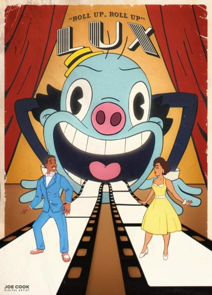

Эра Пятнадцатого Доктора (2 сезон)
<<< НАЗАД ||| 2. Люкс ||| ДАЛЬШЕ >>>
MVO [TVShows] 2.0 + 5.1, DUB [IRONVOICE], MVO [GoLTFilm], [LE-Production], [RHS], [ColdFilm], DVO [KerobTV] или Original [ENG]
Субтитры: Русские, форсированные или
Русские {TrueTransLate} - на английской дорожке
 | Все 8 серий |
Lux
Дата выхода: 19 апреля 2025
Формат: 44-минутный эпизод
| Варианты озвучек: | * Разные: смотрите по инструкции КиноПоиск ID: 5458841 |
|---|---|
| Скачивание и просмотр: |
Майами, 1952 год. Доктор и Белинда, расследуя исчезновение 15 человек из кинотеатра Palazzo Picture Palace, сталкиваются со зловещим врагом, который оказывается далеко не таким двумерным, каким кажется на первый взгляд...


